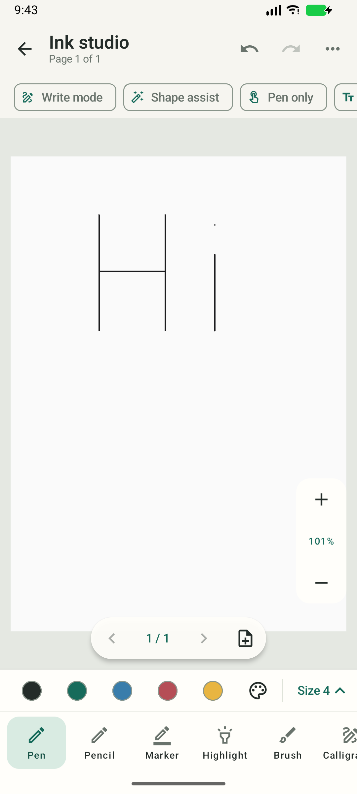
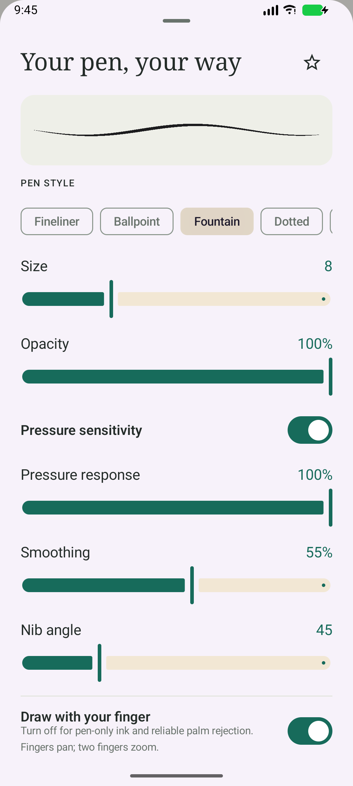

IMPLEMENTATION REVIEW · 15 OCTOBER 2026
Later UI revision: the crowded studio was replaced with a compact Samsung Notes style toolbar and contextual popups. See the revision, screenshots, checks, and remaining gaps. Screenshots below document the earlier layout.
Drawly now has functional handwriting, selection, page management, PDF annotation, and export, with its own warm-paper and teal interface. Open a note and add a drawing, import a PDF, or open the standalone sketchbook. Tap the active pen again for settings. Scroll the bottom tool dock to reach calligraphy, eraser, lasso, and shapes.
Verified: 30 passing tests (12 JVM, 18 Android), debug APK built, Android lint 0 errors / 72 warnings, collaboration worker TypeScript check passed. This is an independent implementation of common notebook interactions, with no Samsung source or assets incorporated.
| Feature | Implementation |
|---|---|
| Pens and strokes | Ballpoint, fountain, fineliner, pencil with deterministic graphite grain, marker, round brush, chisel calligraphy, highlighter, dotted/dashed/glow styles. Pressure ribbons vary width along each stroke; smoothing preserves endpoints. Configurable pressure response, opacity, width, nib angle, custom hex/RGB colours, eyedropper, and persistent favourite pens. Pencil reads tilt where hardware supplies it. |
| Input | Historical stylus pressure, tilt, orientation, timestamps, eraser end/barrel metadata, dot strokes, pen-over-palm priority, optional pen-only ink, finger panning, two-finger zoom. The pen-only setting is the reliable mode for resting a hand on the screen. |
| Erasers | Whole-stroke deletion or area erasing that clips sparse vector segments against the swept eraser path and retains both fragments. Optional highlighter-only erasing. Each gesture can be undone. |
| Selection | Polygon lasso or tap selection; move, resize, rotate, flip, duplicate, copy, cut, paste, recolour, change width, bring forward/send back, and delete. Clipboard is local to the app process. |
| Shapes | Line, arrow, rectangle, ellipse, triangle, diamond; optional equal sides and angle snapping. Conservative automatic line/rectangle/ellipse correction on pen release. Straight highlighter is separately available. |
| Documents | Add, duplicate, reorder, delete pages; plain/ruled/grid/dotted paper, background colour, fit page, focus mode, document undo/redo. Atomic saves retain complete pen config, raw pressure points, page identity, imported assets, and compatibility with legacy stroke arrays. |
| PDF and export | Import all PDF pages as backgrounds and annotate directly. PNG exports the current page; PDF exports all pages with their original backgrounds and new ink. Share a rendered page image. Live view, thumbnails, and exports use the same ink renderer. |
| Handwriting to text | ML Kit digital ink recognition; choose English, Hindi, Spanish, French, or German, download the model once, then convert selected ink or the page on-device. Edit or select a candidate, copy it, or save it to a note while retaining the ink. Image OCR is separate and is not implemented. See Google's API documentation. |
Static inspection found Samsung pen/fountain/calligraphy, area/line/highlighter-only eraser, favourite-pen, and straight-highlighter resources. Focused JADX inspection of HwToolbarPresenter and HwToolbarPresenterImpl shows separate pen/remover settings and style-change/erase-page operations. These establish controls and architecture, not Samsung's private rendering algorithms. Drawly's pressure geometry, eraser clipping, selection, rendering, and Compose controls were implemented independently. See the original artifact investigation for APK hashes, tooling limitations, and inspection commands.
Automated checks cover rendered variable pressure, distinct styles, highlighter over black ink, full tool metadata round trips, sparse-segment and tap erasing, shapes, smoothing, selection transforms and undo, favourites across preference reloads, multipage export, and imported PDF/background ink pixels after reopening the exported PDF. Native MotionEvents were injected with a simultaneous palm touch to verify input handling. Existing notebook, rich-text, autosave, and lock tests also pass.
Physical S Pen latency, vendor-specific gestures, and enrolled biometric authentication still need device testing. Recognition depends on a first-use language-model download; its live model verification is recorded below. Proprietary Samsung cloud/document formats, image OCR, audio transcription, widgets, and full Samsung layout compatibility are not provided. Worker source accepts the new pressure/tool/page metadata, but it has not been deployed or verified across live clients. Pen settings and favourite pens are device-local.
Live recognition review: the first-use model request reached ML Kit but failed because this emulator could not resolve dl.google.com (UnknownHostException). Recognition is connected to the real SDK, but successful model download and candidate generation could not be verified in this environment. Retry on a device with internet access.


.\gradlew.bat :app:assembleDebug :app:testDebugUnitTest :app:connectedDebugAndroidTest :app:lintDebug node cloudflare/node_modules/typescript/bin/tsc --noEmit -p cloudflare/tsconfig.json
APK: app-debug.apk. Source: studio, ink geometry, eraser, document editing.